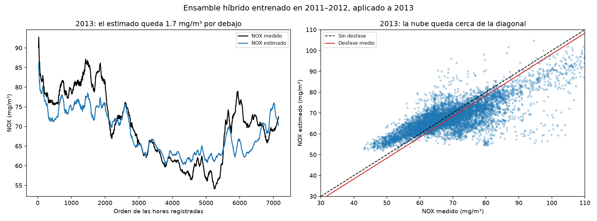
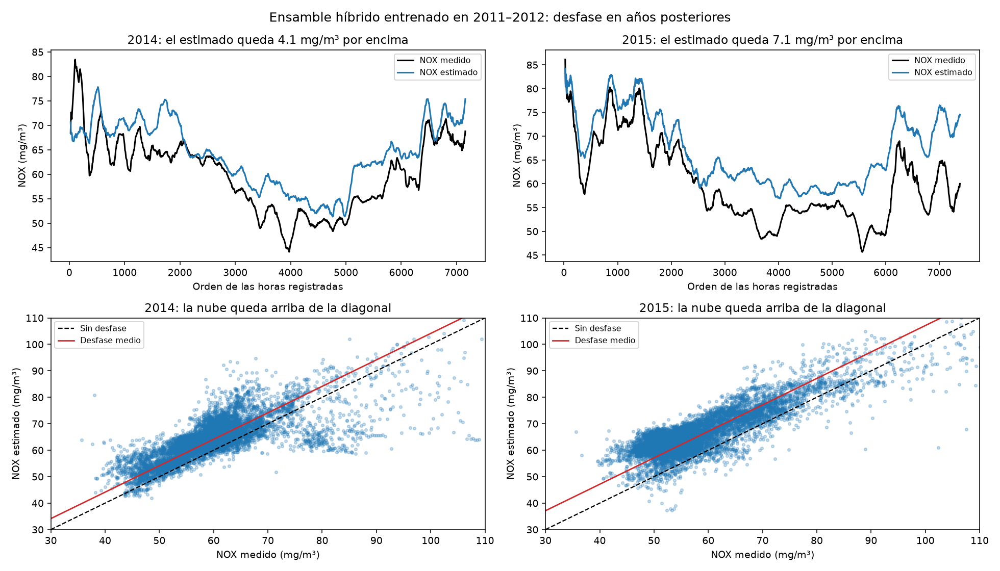
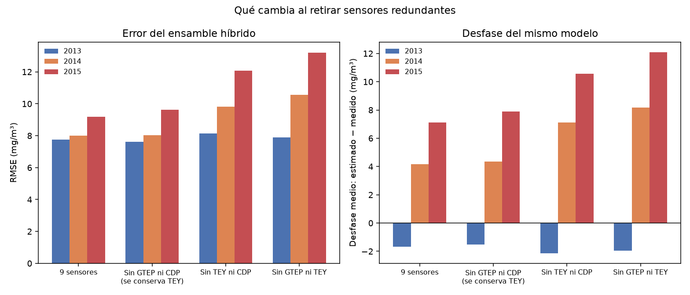
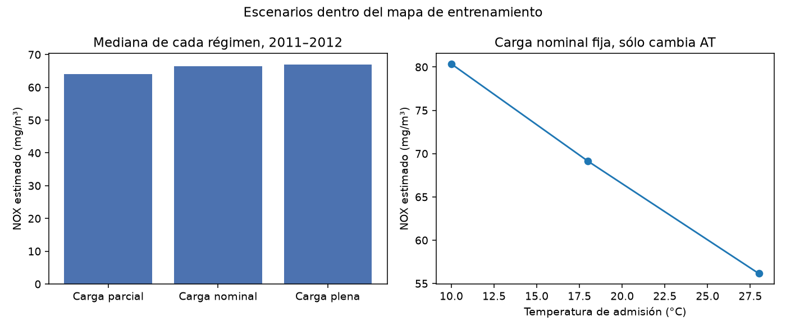

Medición + estimación
Conocemos el valor medido.
Calculamos la diferencia.
Detectamos un desfase persistente.
Universidad Iberoamericana · 27 de noviembre de 2026
Por qué una empresa necesita conocer sus emisiones y qué encontramos al intentar estimarlas con los sensores de proceso.
36,733 horas de una sola instalación, 2011–2015.
José Adrián Bazaldua Huerta · Sebastián de Jesús Enguilo RuizAplicaciones de Analítica de Datos
Contexto · La máquina
La combustión calienta el gas. Al expandirse, mueve el eje que acciona el compresor y el generador.
Los sensores describen cómo trabaja la máquina. El analizador mide la concentración de NOX en el escape.
Esquema genérico de funcionamientoFuente técnica: Department of Energy
Contexto · El contaminante
NO + NO₂ en este proyecto
A altas temperaturas, el nitrógeno y el oxígeno pueden reaccionar. El escape transporta los gases resultantes.
El NO₂ irrita las vías respiratorias. Los NOX contribuyen a formar ozono y partículas en la atmósfera.
La concentración del escape no es la exposición de una persona: la dispersión atmosférica queda fuera de este estudio.
NO: monóxido · NO₂: dióxidoEPA · Información básica sobre NO₂
Contexto · Medir para decidir
Producir la misma electricidad no garantiza la misma concentración de NOX. La medición permite comprobar qué sale del escape.
Una sonda toma una muestra del gas.
Determina la concentración de NOX.
Permite comparar medición, operación y requisitos aplicables.
Miligramos de NOX por volumen de gas. El dataset no permite convertir este dato, por sí solo, en kilogramos emitidos por hora.
Cadena de medición conceptualEPA · Sistemas de monitoreo continuo
Contexto · La pérdida de información
Medir ayuda a seguir cambios y a sustentar reportes de emisiones. Un método alternativo necesita validación y, cuando corresponda, autorización.
No contamos con el permiso ambiental de esta planta turca. No afirmamos multas, cierres ni una obligación específica de usar este instrumento.
Retirar el instrumento no elimina las emisionesEl riesgo es perder su comprobación
Planteamiento · De la necesidad a la pregunta
El analizador requiere calibración y mantenimiento. Una estimación con sensores ya instalados sería atractiva si mantuviera su precisión en años posteriores.
Si el nivel se mantiene
Habría que validar el método, su aceptación regulatoria y sus costos.
Si el nivel cambia
Usar el modelo como referencia y revisar la separación entre ambos.
Nuestro problema no es conseguir una curva parecida: es saber si la estimación conserva el nivel de NOX.
Pregunta del proyectoNo hay costos de esta instalación en los archivos
Objetivo · Qué debe demostrar el análisis
¿Añadir sensores internos mejora el cálculo frente a usar solo el aire de admisión?
¿El modelo conserva el nivel en años que no participaron en el entrenamiento?
¿Cuándo sirve como referencia, simulación o señal de revisión?
Aprender con los primeros años y confrontar la estimación con el analizador en los siguientes.
Objetivo del estudioA continuación: cómo se hizo
Método · Cómo leer los resultados
Estimado menos medido. Positivo: el modelo queda arriba.
Resume la magnitud del error y penaliza más los errores grandes.
Los errores de cada hora varían alrededor del desfase medio.
Azul: medición · Naranja: estimaciónEsquema conceptual, no datos de la planta
Método · La separación temporal
Se congelan los ajustes de 2011–2012. Los años posteriores permiten observar si el nivel se mantiene.
La selección del híbrido para seguimiento es retrospectiva: su menor error posterior no constituye una nueva prueba independiente.
Una instalación de Turquía, cinco archivosFuente: Kaya et al. y UCI
Método · Las entradas
Temperatura · AT
Presión · AP
Humedad · AH
Estimación paralela de NOX en mg/m³
Filtro, presión de escape y del compresor, temperaturas de entrada y salida, y energía producida. Son los seis sensores internos.
CO, NOX y año no son entradas. Sin las condiciones de una hora futura, esto no es un pronóstico.
03Misma hora, no hora futura
Método · Comparación de modelos
Comparamos regresiones, SVR y bosques con los mismos nueve sensores. Menor RMSE significa menor error respecto al analizador.
| Modelo | RMSE |
|---|---|
| Ensamble no lineal | 7.41 |
| SVR | 7.50 |
| Bosque aleatorio | 7.53 |
| Polinomio + Ridge | 7.66 |
| Ensamble híbrido | 7.76 |
| Regresión lineal | 10.63 |
| Ensamble | RMSE | Desfase |
|---|---|---|
| No lineal | 10.48 | +8.52 |
| Híbrido | 8.61 | +5.66 |
En estos años reduce tanto el error como la sobreestimación. Aun así, queda por encima del valor medido.
Elección retrospectiva, sin garantía de desempeño futuro. RMSE y desfase en mg/m³.
Reporte del proyecto · Valores redondeadosA continuación: cómo funciona el híbrido
Método · El ensamble híbrido
Cada modelo calcula el NOX de la misma hora. El híbrido combina esas tres respuestas en un promedio ponderado.
Combina patrones lineales y no lineales. Los pesos son fijos.
04Ajustado solo con 2011 y 2012
Hallazgos · Primera pregunta
9.34
mg/m³ con solo aire
7.41
mg/m³ con sensores internos
Los sensores internos reducen el RMSE cerca de 21 %. El NOX medio ronda 70 mg/m³: el error sigue siendo aproximadamente una décima parte de ese nivel.
052013, antes de que cambie el nivel
Hallazgos · Referencia de 2013

Desfase: estimado − medidoDispersión de residuales en 2013: 7.58 mg/m³
Hallazgos · Segunda pregunta
+4.1
mg/m³ en 2014
+7.1
mg/m³ en 2015
Sin el analizador, no habríamos podido comprobar este error. Sustituir su lectura por la estimación habría reportado una concentración mayor que la medida.
07Misma curva, nivel corrido
Hallazgos · Seguimiento posterior

08Promedio móvil deslizante de 168 registros
Hallazgos · El cambio también está en la medición
TEY de 132 a 136 MWh. AT de 15 a 20 °C.
6.92
mg/m³ menos en 2014 que en 2011–2013. El intervalo, de 5.38 a 8.64, no incluye el cero.
TIT baja unos cinco grados. El archivo no dice la causa. 2015 tiene 115 horas y no entra a este contraste.

09La baja está en el analizador
Hallazgos · Redundancia de sensores

GTEP y CDP aportan poca mejora adicional cuando TEY describe la carga. Quitar TEY aumenta el error. Ninguna reducción elimina el desfase de 2014.
Reducción de entradas del modeloNo es una recomendación de retirar sensores físicos
Aplicación · Convertir el hallazgo en una regla
Se promedia el desfase de los últimos 168 registros. La ventana avanza una posición cada vez.
El corte es el percentil 95 de 2013. Estas son las proporciones de ventanas que lo superan:
Se revisan calibración y operación. La marca no identifica una falla ni exige que cada uno de los 168 registros supere el corte.
No es una semana de calendario verificadaLa regla necesita que el analizador siga midiendo
Aplicación · Simulación acotada

Con la carga nominal fija, a 10 °C el mapa estima 80 mg/m³. A 18 °C, 69. A 28 °C, 56.
Aire más caliente, menos NOX. Es la misma dirección que en el entrenamiento. No pronostica una hora sin medir.
Solo AT cambia en el panel derechoEstar dentro de rangos no prueba causalidad
Conclusión · La evidencia conduce a la decisión
El NOX de una hora ya medida, mientras la planta se parezca a 2011 y 2012.
Hacia dónde se mueve el gas si las condiciones caben en ese rango.
Cuándo el estimado y el analizador dejan de contar la misma historia.
13El instrumento sigue midiendo
Conclusión · Valor y evidencia faltante
Una referencia paralela, escenarios acotados y una regla para señalar cuándo revisar.
No es una alarma predictiva de falla: se activa al observar una separación.
La causa del cambio, los costos locales y la validación de cualquier alternativa de monitoreo.
El archivo no contiene bitácora ni precios de calibración.
Cambiar de algoritmo, por sí solo, no demuestra que pueda sustituirse el instrumento.
Sin costos no hay retorno económico cuantificadoSin bitácora no hay causa identificada
Cierre · Del problema al hallazgo
No alcanzan para firmar los años siguientes.
El analizador permanece. El mapa es respaldo y alerta.
Contexto ambiental y técnico: EPA y DOE. Hallazgos: análisis de los archivos UCI. Las fuentes estadounidenses no establecen la normativa aplicable a esta planta.
José Adrián Bazaldua Huerta · Sebastián de Jesús Enguilo Ruiz27 de noviembre de 2026
Si preguntan
Son valores fijos del catálogo de modelos. No se documentó una optimización de los porcentajes: 60 % polinomio, 25 % bosque y 15 % Ridge.
En validación temporal dentro de 2011–2012, el híbrido obtuvo RMSE de 5.323 mg/m³ y el bosque, 6.139. Esa comparación evalúa la configuración; no demuestra que los pesos sean óptimos.
Dar más peso a una función polinómica tampoco garantiza estimaciones válidas fuera de las condiciones observadas.
AnexoEsc para volver